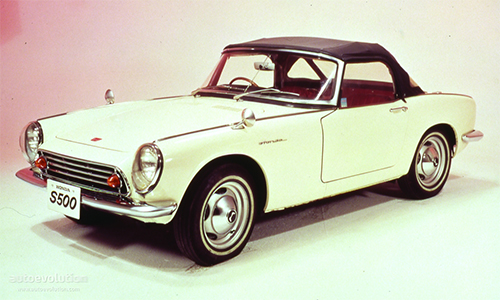
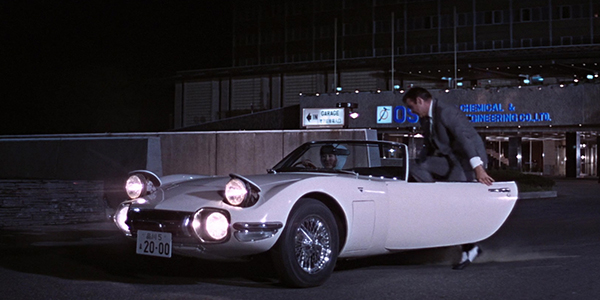
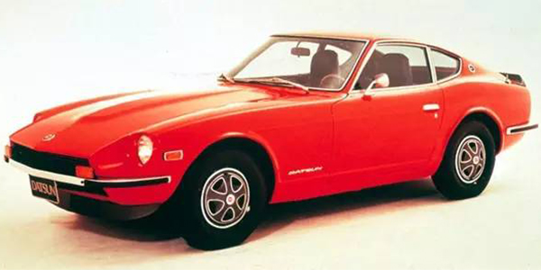
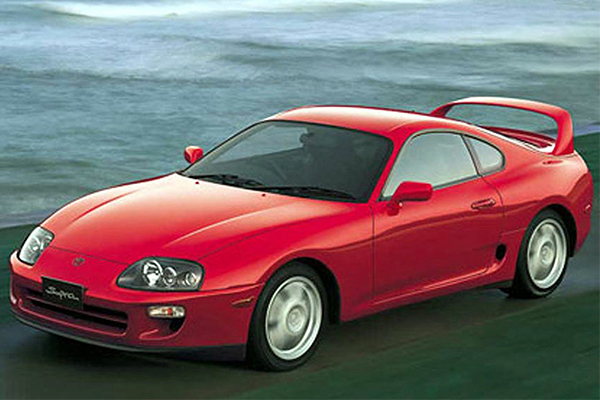

Japanese Sports Cars
Much more than just small, economical cars
Japan has a relatively brief history in building sports cars but has come a long way since their first sports car, the Honda S500. The S500, which launched in 1963, was Japan's first sports car and the first car produced by Honda, who had previously been known for building motorcycles and other small machinery.

1963 Honda S500 Sports Car
The S500 was a basic car, even by the standards of the time. Honda, having no prior experience in developing cars, applied their knowledge in building motorcycles to the design and engineering of the S500. As such, the S500 was built with a 500cc motorcycle engine (hence, the moniker, "S500") and featured a chain operated drivetrain, much the same as Honda used in their motorcycles. This car was quickly superseded by the S600 (1964) and, eventually, the S800 (1966), which used a conventional engine and driveline as seen in most cars.
Other Japanese car manufacturers were keen to produce their own sports cars, and by the end of the 1960s, Nissan (known at the time outside of Japan as Datsun), Toyota and Mazda had all produced a sports car of their own. Perhaps the most famous of these was the Toyota 2000GT, a modified version of which featured in the 1967 James Bond 007 film, You Only Live Twice.

Toyota 2000GT in You Only Live Twice
The 1970s saw an explosion in the market for Japanese sports cars, with the Nissan (Datsun) 240Z smashing worldwide sports car sales records and essentially bringing an end to the domination of the international sports car market formerly occupied by European (especially British) manufacturers.

Datsun 240Z
From the 1980s to now, Japanese car manufacturers developed their own style and definition of what a sports car should be. Iconic names such as Supra, RX-7 and Skyline are now cemented in sports car nomenclature and recognised for their contributions to sports car history.

Toyota Supra